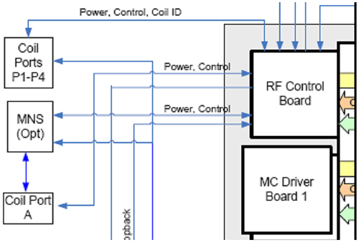

Proprietary to General Electric Company
Direction 5670006, Rev# 1
Discovery MR750w GEM Service Methods
Module Version 8.0, Version Date 10/18/11
Proprietary to General Electric Company |
Coil ID allows coils equipped with a properly programmed Coil ID chip to be identified by the MR system. The Coil ID chip resides within the coil and has a unique serial number that identifies that specific coil. Coils that connect into the A or P-ports must be coil ID compatible. (The P1- and A-ports are in the low-profile carriage assembly while the P2-, P3-, and P4-ports are within the table.) The system will not permit the customer to scan with coils that interconnect with these connectors but are not equipped with a Coil ID chip.
Special quick disconnect (QD) boxes may be provided for older GE-supplied coils on site that are supported by the system. These QD boxes are clearly marked as Coil ID compatible.
Illustration 1: How Coil ID Works

The RF Hub RF Control Board (RFCB) reads the coil ID information from the coils. Cables route from the coil ports to the front panel of the RFCB. These connection points on the RFCB are clearly labeled Coil Port 1, Coil Port 2, Coil Port 3, Coil Port 4 and A Connector. There is also a connection point denoted MNS that is used by sites that purchase the optional MNS hardware.
| NOTE: | These DC connections are completely separate from the RF signal pin connections on each port. RF signals are routed through the reroute box into the RF Hub RF Switch Board. Systems without a reroute box route these signals directly to the RF Switch Board. |
The RFCB field programmable grid array (FPGA) contains within its design a Dallas OneWire DS1WM IP core that can read the CoilIDs from each coil. Some coils allow another coil to be plugged into them, allowing multiple coils to be connected to the system through a single coil port. The Coil ID information for all coils associated with a particular coil port in these “multi-drop” configurations are read using a single OneWire IP core in the FPGA.
A pair of red and green LEDs on the front of the A connector bezel show status of Coil ID for any connected coil. Coil ID diagnostics are available as a subset of RF Hub diagnostics that are useful for troubleshooting hard and intermittent failures and for general testing of all the associated hardware